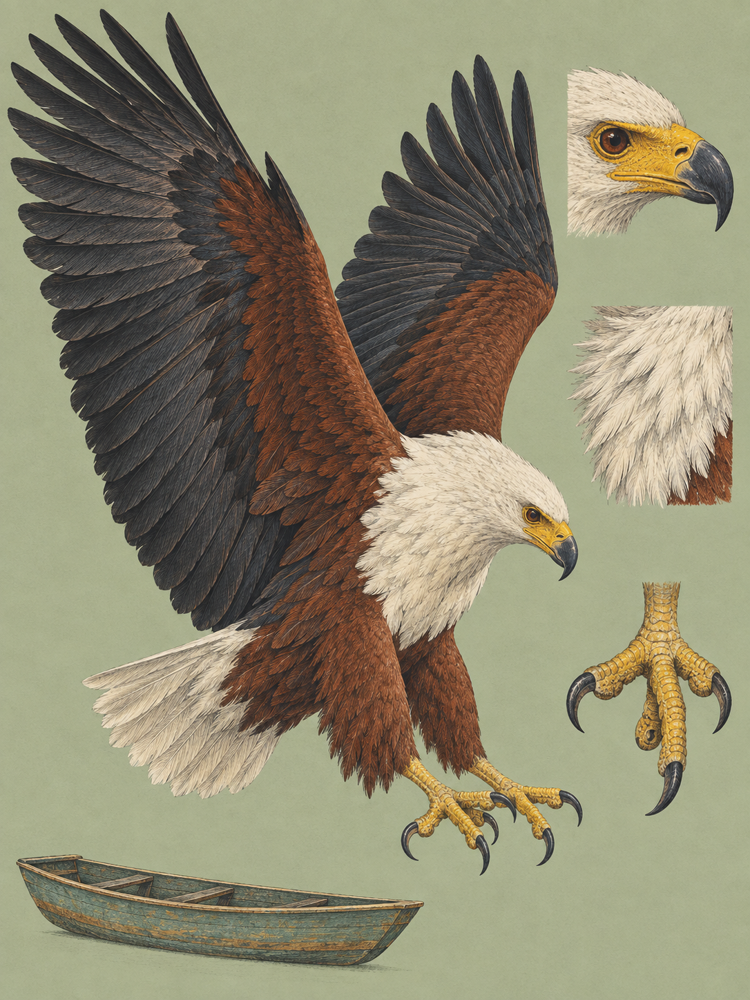

RIFT VALLEY
Haliaeetus vocifer
Swahili: „Furukombe wa Afrika“, „Tai miasamaki“, „Kwazi“. Giriama: „Kwazi“. Chewa/Nyanja: „Nkwazi“.

Wer im Rift Valley früh an einem See steht, hört diesen Vogel, bevor er ihn sieht. Der Ruf trägt weit, glockenähnlich oder schrill, und wird gern als „Weeah kyow-kow-kow“ wiedergegeben. Der Vogel legt dabei den Kopf charakteristisch weit in den Nacken, von der Ansitzwarte aus oder im Thermikflug. Oft antwortet ein zweiter, mal gleichzeitig, mal versetzt. Wer genau hinhört, kann die beiden unterscheiden: Das kleinere Männchen ruft in einer messbar höheren Frequenz als das massigere Weibchen, im Durchschnitt bei etwa 330 Hertz gegen etwa 300. Man hat diese Stimme „die Stimme Afrikas“ genannt und, für einen bestimmten See, „die Stimme von Naivasha“.
Der wissenschaftliche Name sagt genau das. François Marie Daudin beschrieb die Art im Jahr 1800 als Falco vocifer, und zwar in einem der ersten modernen ornithologischen Handbücher, dem Traité élémentaire et complet d'Ornithologie. Daudin starb drei Jahre später mit 27 Jahren, nachdem er über 1.100 Präparate untersucht hatte. Haliaeetus setzt sich aus dem altgriechischen hals für Meer oder Salz und aetos für Adler zusammen, vocifer aus dem lateinischen vox, Stimme, und der Endung -fer von ferre, tragen oder bringen. Wörtlich also: der stimmentragende Seeadler. Auf Swahili heißt er unter anderem Tai miasamaki, Adler der Fische.
Gejagt wird vornehmlich aus der Ruhe. Den Großteil des Tages verbringt der Adler sitzend auf einem waagerechten Ast dicht über dem Wasser, oft in einer Acacia xanthophloea oder in Ficus-Arten. Außerhalb der Brut- und Aufzuchtphase schrumpft die aktive Flugzeit für die Nahrungssuche auf weniger als zehn Minuten am Tag. Sieht er etwas, gleitet er los und greift den Fisch im Vorbeiflug aus der obersten Wasserschicht.
Das eigentliche Kunststück ist der Griff. Auf den Sohlen der Zehen sitzen winzige, dornenartige Ausstülpungen, Spicula genannt, verhornte Papillen, die wie Widerhaken wirken und die Reibung zwischen Fuß und Fischhaut erhöhen. Dazu kann der Adler seine äußere Zehe nach hinten drehen. Dann greifen zwei Zehen nach vorn und zwei nach hinten, und der zylindrische Körper des Fisches wird von allen Seiten gleichmäßig umschlossen. Hat er ihn, richtet er die Beute im Flug häufig so aus, dass ihr Kopf nach vorn zeigt, was den Luftwiderstand verringert. Bevorzugt sind Fische zwischen 150 und 300 Gramm, dokumentiert sind Fänge bis 4.200 Gramm. Wird die Last zu schwer, setzt er sich aufs Wasser und paddelt mit schwimmähnlichen Flügelschlägen ans Ufer.
Der Fisch steht im Namen, die Speisekarte ist trotzdem stark opportunistisch. Am Lake Naivasha enthielten nahezu alle untersuchten Nahrungsreste an den Ansitzwarten Vogelfedern, primär vom Kammblässhuhn (Fulica cristata), drei Viertel davon auch Vogelknochen. Dazu kommt offener Raub: Der Schreiseeadler attackiert systematisch andere fischfressende Vögel, darunter den als Wintergast anwesenden Fischadler (Pandion haliaetus) sowie Reiher- und Pelikanarten, um ihnen im Flug die Beute abzujagen. In Ruhe gelassen wird er selbst nicht immer. Am südlichen Naivasha-See und im Hell's Gate Nationalpark vertrieben Felsenbussarde (Buteo augur) die Seeadler von Uferbäumen.
Wie es diesem Vogel geht, lässt sich an einem einzigen See ablesen. Der Lake Naivasha ist die Ausnahme im Grabenbruch: ein Süßwassersee auf etwa 1.884 Metern, der seine Salze über einen unterirdischen Abfluss loswird, der Schätzungen zufolge 20 bis 30 Prozent des Oberflächenzuflusses ausmacht. In den späten 1960er und frühen 1970er Jahren zählte hier der schottisch-kenianische Ornithologe Leslie H. Brown, und die Wasserstände waren historisch hoch. Er kam auf bis zu 224 Vögel, etwa einen je Quadratkilometer Wasserfläche und bis zu 3,5 je Kilometer Uferlinie, die höchste Dichte, die je auf dem afrikanischen Kontinent gemessen wurde. Von 1968 bis 1971 blieb die Zahl der Brutpaare konstant bei 56. Wo ein Paar Zugang zu einer geschützten Lagune im Papyrusgürtel (Cyperus papyrus) hatte, zog es im Schnitt 0,55 Junge im Jahr auf, an offenem Ufer nur 0,29.
Dann kippte die Kette, Glied für Glied. Ein eingeschleppter Sumpfkrebs (Procambarus clarkii) vernichtete in den 1970er Jahren die Seerosenbeete, den frei gewordenen Platz besetzten Schwimmfarne (Salvinia molesta) und ab 1988 die Wasserhyazinthe (Eichhornia crassipes). Ihre geschlossenen Teppiche versperrten dem Adler den Zugriff auf die Wasseroberfläche. Gleichzeitig wuchs die Schnittblumen- und Gartenbauindustrie am Ufer, rodete den Papyrus und fällte die Gelbfieberakazien, die als primäre Ansitzwarten und Nistbäume der Adler fungierten. Die Wasserentnahme, geschätzt auf 46,4 bis 60 Millionen Kubikmeter im Jahr, ließ die flachen Lagunen trockenfallen. Ohne den Papyrus als Filter stieg der Gesamtstickstoff von 0,04 Milligramm je Liter in den 1970er Jahren auf 4, das Wasser trübte ein, und ein Jäger, der auf seine Augen angewiesen ist, traf schlechter. Von 1987 bis 1999 zählten David M. Harper und Munir Z. Virani vom Boot aus. Aus 165 Individuen in den späten 1980er Jahren wurden im April 1998 gezählte 62. Zwischen 1991 und 1994 lag der Anteil der Jungvögel bei null Prozent, und es wurde weder gebalzt noch genistet.
Was die Kette wieder in Gang setzte, war Wetter. Das El-Niño-Ereignis von 1997/1998 brachte ungewöhnlich heftige und langanhaltende Niederschläge, und der Wasserspiegel stieg in kurzer Zeit um drei Meter. Die Flut lief über die degradierten Uferzonen und hinter die gestrandeten Reste des Papyrusgürtels. Schlagartig lagen dort wieder flache, nährstoffreiche Lagunen, in denen Fische und Wasservögel, insbesondere Rallen, sprunghaft zunahmen. Schon im Frühjahr 1998 begannen geschätzt 15 Paare wieder zu brüten, ein Jahr später standen 38 neue Nester am See, und die Zählung kam auf über 100 Vögel, darunter 17 bis 24 flügge Junge. Ab 2001 stabilisierte der eingeführte Schuppenkarpfen (Cyprinus carpio) die Nahrungsbasis. Seit 1995 ist der See ein Ramsar-Gebiet.
Ende September steht das Wasser am tiefsten, die Fische drängen sich auf engem Raum, und das Laub der Uferbäume ist dünn. Der Adler sitzt dann gut sichtbar im Wipfel, legt den Kopf in den Nacken und ruft. Wer die Kette kennt, hört im selben Ruf zweierlei: ein Revier und einen Pegelstand.
Vier Staaten führen den Vogel im Wappen: Malawi, Namibia, Sambia und Simbabwe. Im Nyanja- und Chewa-Sprachraum steht das Wort Nkwazi, Fischadler, für Wachsamkeit, Führung und Weitsicht. Die Luo erzählen, der ganze Viktoriasee sei in ferner Vorzeit durch den Urin eines gewaltigen Riesen namens Lolwe entstanden, und der Adler gehört als ständige Stimme zu dieser Seenlandschaft. Weniger freundlich verlief das 20. Jahrhundert. Ab dessen Mitte wurde in vielen afrikanischen Staaten DDT großflächig ausgebracht, vornehmlich gegen Tsetsefliegen und krankheitsübertragende Mücken. Der Abbaustoff DDE reichert sich in der Nahrungskette an und stört bei Endgliedern wie diesem Adler den Kalziumhaushalt, die Eierschalen werden dünner. Am Lake Kariba in Simbabwe maß man in den 1980er und 1990er Jahren 53 ppm DDE in den Eiern, die Schalendicke lag gegenüber Museumsstücken aus den 1930er Jahren um 11 Prozent niedriger, in hochbelasteten Zonen um über 20. Am Naivasha stellten Harper und Kollegen fest, dass dort der akute Mangel an Nistplätzen und Nahrung den Effekt der Gifte überlagerte. Heute kommt eine andere Praxis dazu. Bootsführer höhlen tote Fische aus und füllen sie mit Styropor, damit sie schwimmen. Der Führer pfeift, schüttelt den Köder und wirft ihn etwa 20 Meter vom Boot. Verschluckt der Vogel den Schaum, drohen Erstickung, Geschwüre und Durchbrüche im Darm, auf lange Sicht verzögerte Eireifung, geschwächte Abwehr und erhöhte Sterblichkeit.
Wo und wann: Lake Naivasha, in den Randstunden. Die Sonne geht gegen 06:20 Uhr auf und um 18:30 Uhr unter, brauchbar ist das Licht von 06:30 bis 08:30 Uhr und wieder von 16:30 bis 18:30 Uhr. Mittags steht es senkrecht, und der Kontrast zwischen dem weißen Kopfgefieder und dem dunklen Wasser reißt die Lichter ab. Abwarten lohnt am Ansitzbaum: Der Vogel sitzt lange, dann gleitet er los. Ende September ist das Laub dünn und der Blick in die Wipfel frei. Am Naivasha sind die Adler an Boote gewöhnt und lassen 20 Meter zu, in ungestörteren Habitaten verlassen sie die Warte in der Regel ab 50 bis 100 Metern.
Brennweite: 150 bis 600 für Anflug und Zugriff, 100 bis 400, wenn der Vogel nah sitzt und der Ast mit ins Bild soll.
Bild-Idee: der Moment des Greifens, Fänge in der obersten Wasserschicht, Tropfen in der Luft. 1/2000 bis 1/3200 s, dazu f/7.1 oder f/8 für Schärfentiefe über die ganze Flügelspanne und eine Belichtungskorrektur von -0,7 bis -1,3 EV, damit die weiße Brust nicht ausbrennt.